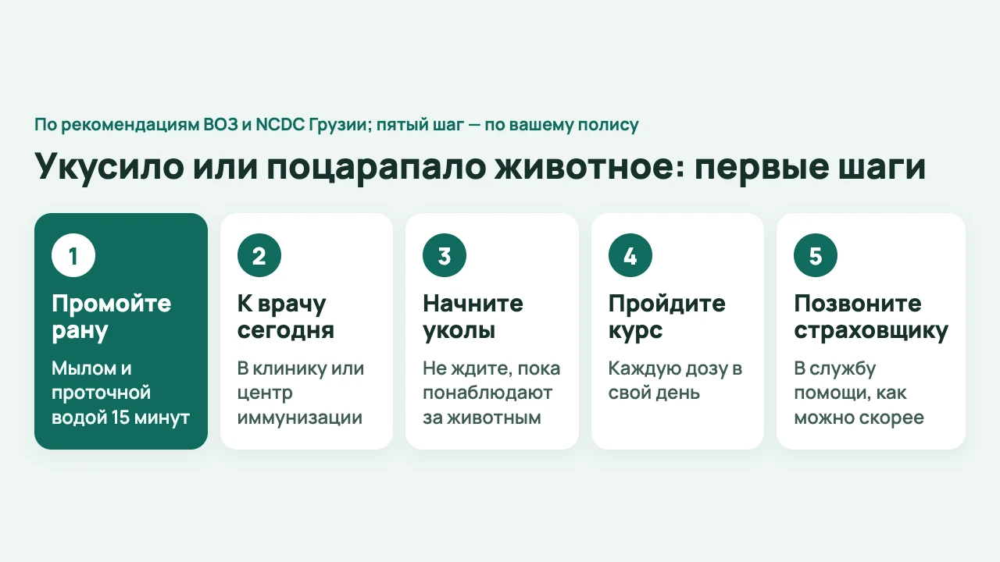
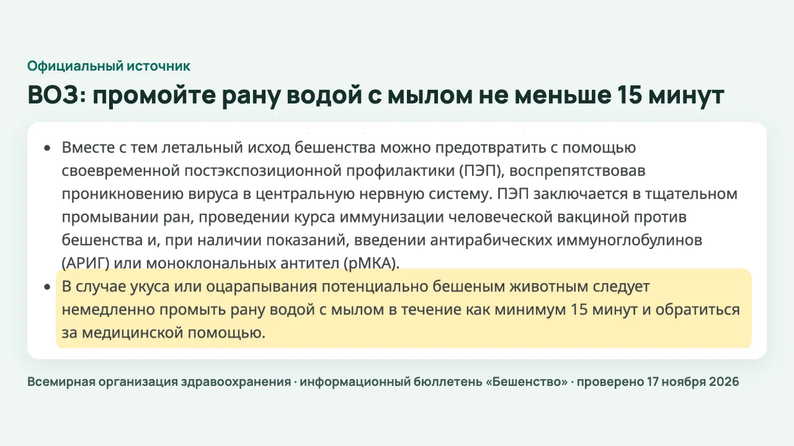
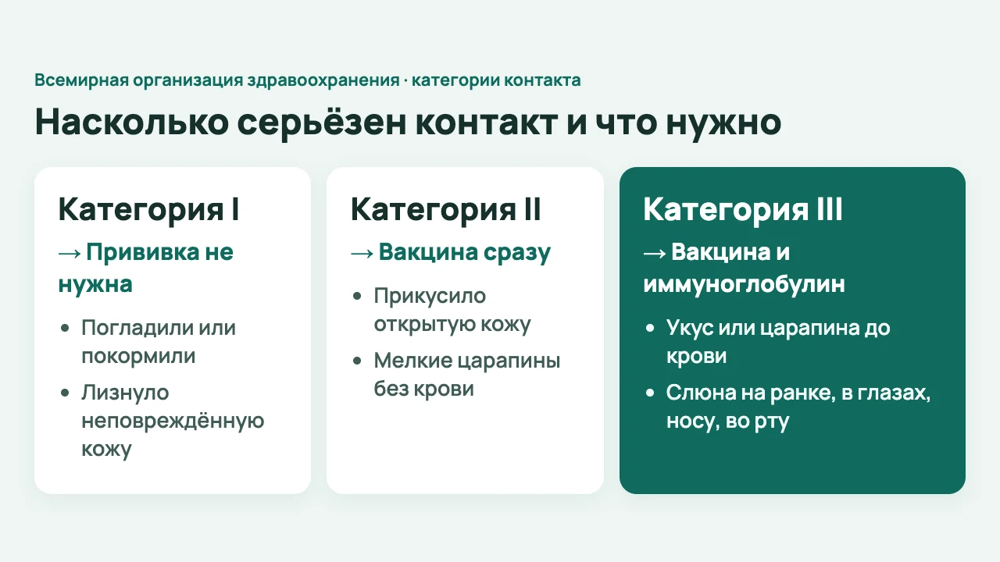

Статья — о человеке: о туристе или о том, кто живёт здесь. Если вы про питомца, правила ввоза другие — это отдельная тема. Статья входит в наш справочник о медицине в Грузии. Проверено 17 ноября 2026 года.
Укусила собака в Грузии: что делать сразу
Промыть рану и в тот же день показаться врачу. Не ждите, как поведёт себя животное: начало лечения от этого не зависит.

Всемирная организация здравоохранения (ВОЗ) советует «немедленно промыть рану водой с мылом в течение как минимум 15 минут и обратиться за медицинской помощью» (информационный бюллетень ВОЗ).
Национальный центр по контролю заболеваний и общественному здоровью Грузии (NCDC) пишет то же: мыло, обильная проточная вода, 15 минут (страница NCDC, на грузинском). Дальше:
- Затем обработайте рану средством с йодом или другим средством, которое убивает вирус.
- Слюна попала в глаза, нос или рот? Промойте их водой и тоже идите к врачу.
- Не откладывайте уколы ради наблюдения за животным: NCDC прямо называет это недопустимым.
- Пёс домашний — запишите контакты хозяина и спросите, привит ли он.
- Сильное кровотечение — звоните 112. Вот как вызвать скорую в Грузии.
Лечение начинают на месте, в поездке: ждать возвращения домой не нужно.

Нужна ли прививка, если только поцарапала или облизала?
Зависит от вида контакта, а решает врач. ВОЗ делит контакт с собакой, кошкой или другим животным на три категории:
- I — трогали, кормили, животное облизало неповреждённую кожу: прививка не нужна.
- II — покусывание открытой кожи, мелкие царапины или ссадины без крови: промыть рану и сразу начать вакцину.
- III — укус или царапина через кожу (одна или несколько), слюна на слизистой или на повреждённой коже, контакт с летучей мышью: вакцина и иммуноглобулин.
NCDC описывает третью категорию так же: «кровоточащий укус или царапина» и слюна на слизистых.

Где сделать прививку от бешенства в Тбилиси
В Центре иммунизации — полное название «Центр профилактической медицины и иммунизации». Адрес: Тбилиси, ул. Ташкентская, 10а, телефон 032 231 22 78.
Это частная компания, не NCDC. По данным сайта центра (на местном языке), экстренные уколы от бешенства и столбняка здесь делают каждый день, круглосуточно. Повторные дозы лучше приходить делать с 9:00 до 18:00.
Как проходит визит:
- нужен ли курс и какой, решает хирург или рабиолог на месте;
- за консультацию центр денег не берёт;
- по телефону случай не оценивают — нужно прийти;
- возьмите паспорт.
Перед визитом можно открыть отзывы и контакты Центра иммунизации в каталоге 100doc.ge.

А если укусили в Батуми или в регионах?
Идите в ближайшую больницу в тот же день; при сильном кровотечении звоните 112. Официального списка мест, где делают прививку от бешенства в Батуми и других городах, мы не нашли.
Британский МИД пишет, что лечение доступно в Тбилиси и крупных городах, а за пределами столицы медицина ограничена.
Сколько уколов от бешенства нужно: схема ВОЗ
Обычно 3–4 визита за 1–4 недели; точную схему выбирает врач. Врачи называют это постэкспозиционной профилактикой — лечением после контакта.
Прививка от бешенства после укуса собаки — это курс, а не один укол. Для тех, кто раньше не проходил курс, при II или III категории позиция ВОЗ 2018 года (PDF, на английском) предлагает такие схемы:
| Схема | Дни уколов |
|---|---|
| ВОЗ, внутрикожно (2 точки) | 0, 3, 7 |
| ВОЗ, в мышцу (1 точка) | 0, 3, 7 и одна доза между 14-м и 28-м днём |
| ВОЗ, в мышцу, «Загреб» | 0 (2 точки), 7, 21 |
| CDC США, в мышцу | 0, 3, 7, 14 |
Строка США — из справочника CDC для путешественников. Местные клиники могут вести по другой схеме: NCDC пишет только «по схеме полного курса», без дней.
Прошли полный курс до поездки? После контакта нужны 2 дозы, в дни 0 и 3, без иммуноглобулина. Беременность и грудной возраст — не противопоказание. Детям до 2 лет укол делают в бедро, остальным — в плечо, но не в ягодицу.
Когда нужен иммуноглобулин
Только при III категории. Его вводят один раз, как можно раньше вместе с первой дозой и не позже 7-го дня после первой дозы; как можно больше — в саму рану.
Если иммуноглобулина нет, курс всё равно начинают сразу: «вакцину нельзя откладывать, даже если иммуноглобулина нет» (позиция ВОЗ 2018 года).
Кто платит за прививку от бешенства в Грузии
Центр иммунизации называет цену по телефону и пишет, что экстренные прививки покрывает всеобщая и/или частная страховка.
Подтверждения, что государство оплачивает туристам этот курс, мы не нашли.
Туристам из России, Казахстана, Беларуси важнее другое. С 1 января 2026 года иностранцам при въезде нужен полис здоровья и от несчастного случая: покрытие 30 000 лари, как требует закон Грузии. Требование ввело Постановление Правительства №602, подробнее — обязательная страховка с 1 января 2026 года.
В правилах полиса IRAO указано: экстренная вакцинация, включая полный курс прививок от бешенства, возмещается на 100 %, без франшизы и без отдельного лимита — в пределах общего лимита полиса. Плановые прививки не покрываются; тем, кто старше 65 лет, возмещается 50 % расходов.
Такой полис продаётся на 100doc.ge: туристическая страховка для поездки в Грузию. Полис покрывает события в срок своего действия — оформляйте его до поездки, а не после встречи с животным.
После контакта с животным позвоните в службу помощи IRAO, +995 32 2 949 949, как можно скорее — лучше до визита в клинику: по правилам полиса расходы, понесённые без обращения в службу помощи, могут не возместить. Клиника не работает с IRAO напрямую и вы платите сами? Сохраните форму IV-100a с печатью и подписью врача, подробный счёт и оригиналы чеков. Подать их нужно в течение 30 календарных дней.
Сколько стоит укол от бешенства в Тбилиси
Опубликованной цены нет: Центр иммунизации называет её по телефону, а за консультацию денег не берёт. Цифры с форумов и из ответов ИИ устарели или не подтверждены — уточните цену до первой дозы.
Бродячие собаки в Тбилиси и по Грузии: насколько часто бешенство?
Бешенство здесь есть, в основном у животных. По данным ВОЗ, укусы и царапины собак — причина 99 % случаев у людей во всём мире (бюллетень ВОЗ).

Национальное агентство продовольствия (NFA) к 15 апреля 2026 года подтвердило в лаборатории 3 случая по всей стране, сообщало издание JAMnews. Среди них — бездомный пёс в селе Бандза (Мартвили), который покусал нескольких человек, и лиса в Цалке. В обоих местах ввели карантин.
У людей NCDC сообщал об одном случае в 2021 году; данных за 2022–2026 годы мы не нашли. По оценке NCDC, страна относится к региону высокого риска.
У собаки бирка в ухе — к врачу всё равно?
Да, в тот же день. Официального объяснения, что значит такая метка, мы не нашли — ни у Национального агентства продовольствия, ни у мэрии Тбилиси. Нужен ли курс, зависит от вида контакта, а не от того, что висит у животного на ухе.
Нужна ли прививка от бешенства до поездки в Грузию?
Зависит от поездки; решайте с врачом, глядя на свой маршрут.
Британский сервис TravelHealthPro пишет, что бешенство в стране считается риском и встречается у домашних животных. Курс до поездки там советуют:
- при риске по работе;
- если лечение после контакта будет трудно получить;
- при беге и езде на велосипеде;
- при поездке дольше месяца.
NCDC относит страну к региону высокого риска (страница NCDC). По данным CDC, курс до поездки — 2 дозы, в дни 0 и 7. Даже после него при контакте с животным нужен врач и ещё 2 дозы, в дни 0 и 3.
А если вы про питомца — правила ввоза другие, это отдельная тема.
Частые вопросы
Укусила собака — что делать в первую очередь?
Промойте рану водой с мылом 15 минут, обработайте средством с йодом и в тот же день идите к врачу. Наблюдать за животным вместо этого нельзя.
Сколько уколов от бешенства делают после укуса?
По ВОЗ — 3–4 визита: в дни 0, 3, 7 или 0, 3, 7 и ещё один между 14-м и 28-м днём. Тем, кто прошёл курс заранее, — 2 дозы. Схему выбирает врач.
Сколько можно ждать с уколом после укуса?
Ждать не нужно: ВОЗ и NCDC велят начинать сразу. Если дни уже прошли, идите к врачу сегодня — решение за ним. Иммуноглобулин, если он нужен, вводят не позже 7-го дня после первой дозы вакцины.
Если поцарапала кошка, можно заразиться бешенством?
Да. Царапина до крови — это III категория, как укус. Царапина без крови — II категория, вакцина всё равно нужна.
Собака домашняя и привитая — прививка всё равно нужна?
К врачу — в тот же день, даже если собака домашняя и привитая. Узнайте у хозяина, когда её прививали; продолжать ли курс, решает врач, а начало не откладывают ради наблюдения.
Есть ли бешенство в Грузии сейчас?
Да, у животных: к апрелю 2026 года NFA подтвердило 3 случая. У людей NCDC сообщал об одном случае в 2021 году.
Источники
- Британский МИД: советы путешественникам в Грузию, здоровье
- Всемирная организация здравоохранения: информационный бюллетень
- ВОЗ: позиция 2018 года, краткое изложение (PDF, на английском)
- CDC США: справочник для путешественников
- NCDC: страница «ცოფი» (на грузинском)
- TravelHealthPro: страница страны
- Центр иммунизации: адрес и услуги
Это справочная информация, а не медицинская консультация: лечение назначает врач. Проверено 17 ноября 2026 года.